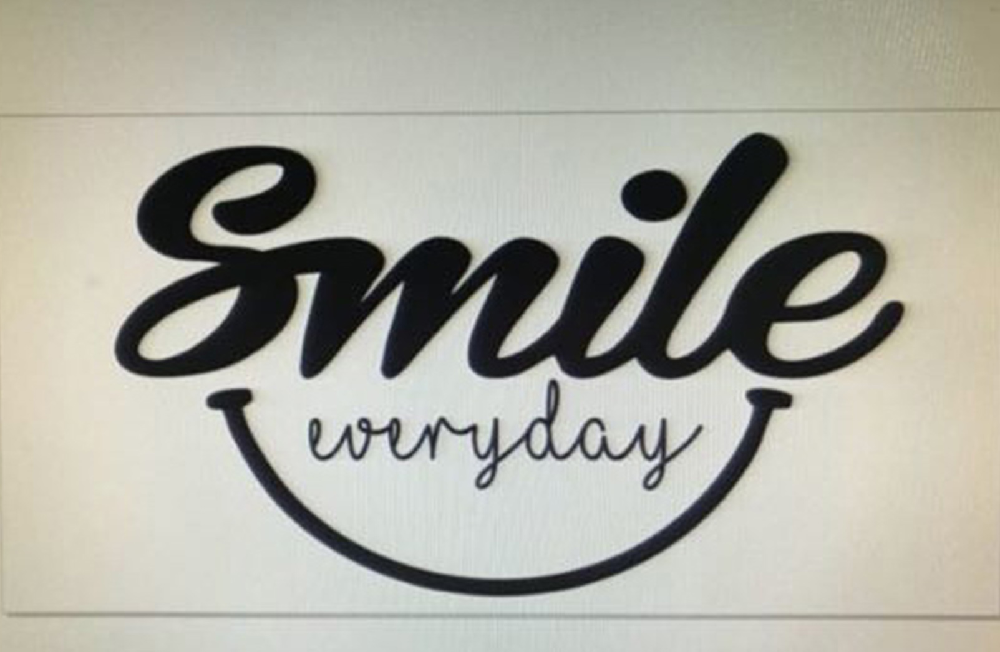

Com atividades presenciais e online, mentorias individuais e desafios práticos, a Trybe é a escola do futuro e para o futuro que acelera sua carreira em desenvolvimento de software em até 12 meses.
E o melhor? Você não paga nada até conseguir um trabalho com uma remuneração de, no mínimo, R$ 3.000,00 por mês.
Para você que Já é estudante de computação, para você que se interessa pelo assunto e até mesmo para você que está pensando em mudar de carreira e ainda não conhece nada.
A Trybe funciona para qualquer pessoa que queira uma carreira de sucesso em tecnologia.
E QUE TENHA MUITA VONTADE E DEDICAÇÃO!

"Eu trabalho com Marketing e não tinha nenhuma formação ou experiência na área e consegui entrar na Trybe para me tornar desenvolvedor de software."
Conrado Medeiros Aluno da Turma de Setembro - BH

"Eu não sabia nada de programação! Estudei os conteúdos gratuitos disponibilizados, consegui fazer o processo e passar. Estou aqui firme e forte para conseguir virar um desenvolvedor."
Gabriel dos Santos Aluno da Turma de Setembro - BH

"Sou estudante de Engenharia Química e entrei na Trybe sem nenhuma experiência na área e estou animado para me tornar desenvolvedor."
Anderson Bolivar Aluno da Turma de Setembro - BH